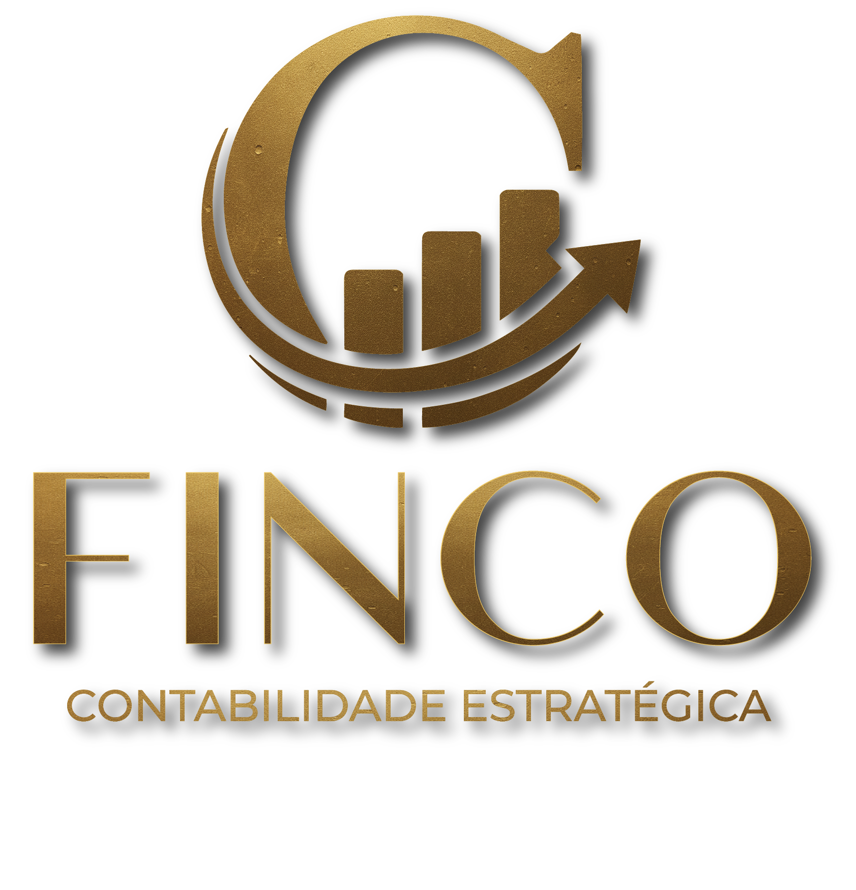

Mais do que cumprir obrigações. Entregamos inteligência contábil, conformidade regulatória e visão estratégica para sua empresa crescer com segurança.
A Finco nasceu da necessidade de transformar a contabilidade em uma ferramenta real de gestão e conformidade — especialmente para empresas e instituições que lidam com exigências regulatórias rigorosas.
Já atuamos com +200 empresas em todo o Brasil.
Não apenas registramos. Analisamos, interpretamos e transformamos dados em recomendações acionáveis para a tomada de decisão.
Especialidade em normas do Banco Central, COSIF, CADOC e obrigações regulatórias. Transparência e rigor técnico.
Atuamos como extensão do seu time. Próximos, técnicos e orientados a resultado — não apenas a entregas burocráticas.
Do operacional ao estratégico — um portfólio pensado para empresas que precisam de mais do que contabilidade tradicional.
Escrituração completa, demonstrações financeiras e análise gerencial com foco em decisões. Você recebe números que fazem sentido para o negócio.
Expertise em instituições financeiras e empresas sujeitas a supervisão do Bacen. COSIF, CADOC, relatórios prudenciais e conformidade.
Estratégias legais para otimizar a carga tributária e preparar a empresa para a Reforma Tributária (IBS, CBS, IS).
Folha de pagamento, eSocial, obrigações trabalhistas e previdenciárias com precisão e prazo.
Constituição de empresas, holdings e reorganizações societárias com visão societária e tributária integrada.
Diagnósticos, reuniões de gestão e suporte contínuo para que a contabilidade seja realmente um braço da estratégia.
Entendemos a linguagem do Bacen, COSIF e exigências prudenciais. Não improvisamos em ambiente regulado.
Entregamos relatórios claros, indicadores e recomendações — não apenas balancetes e guias.
Processos organizados e comunicação direta. Você fala com quem realmente entende do seu caso.
Não somos prestadores de serviço pontuais. Crescemos junto com nossos clientes.
Entendemos seu momento, desafios e objetivos. Sem compromisso.
Mapeamos a situação contábil, fiscal e regulatória atual da empresa.
Escopo claro, prazos e forma de trabalho alinhados às suas necessidades.
Operação contínua com reuniões de resultado e suporte estratégico.
Agende uma conversa sem compromisso. Vamos entender seu cenário e mostrar como a Finco pode ajudar.
Atendimento em todo o Brasil